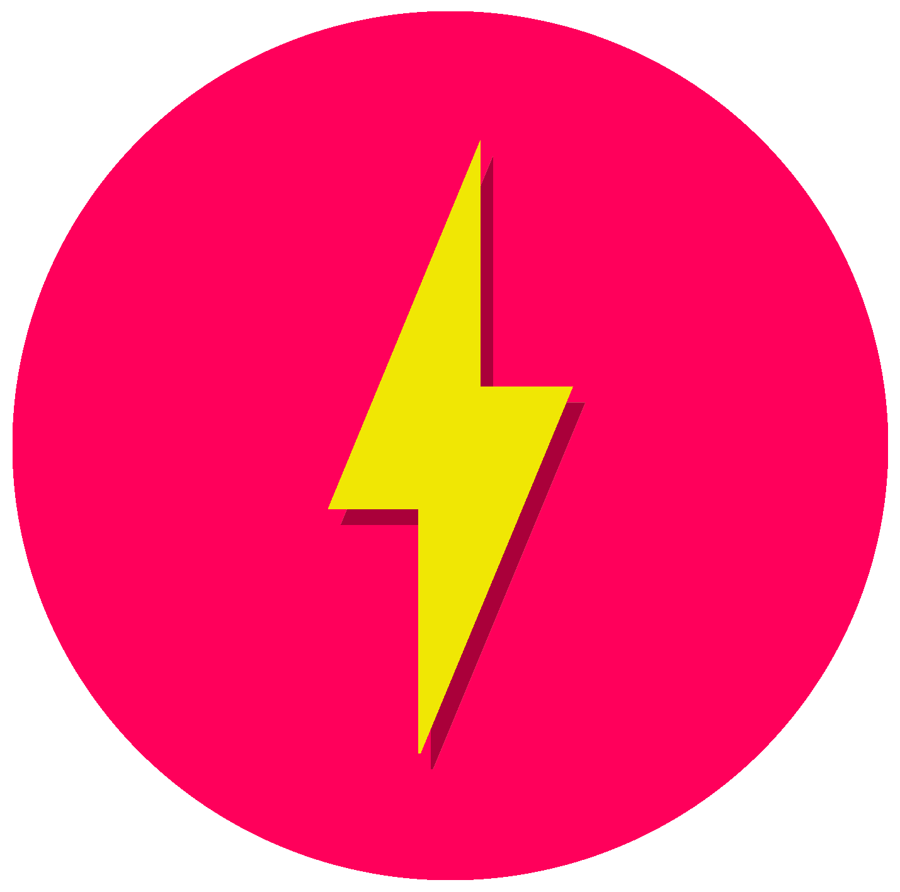
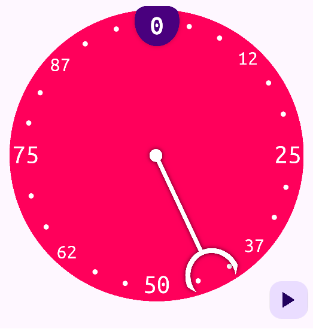
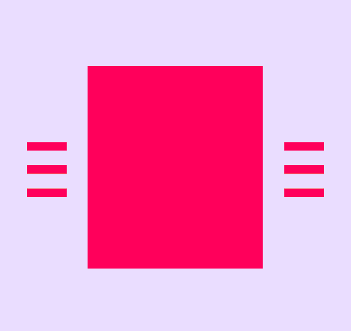

Cledson Ferreira
Servidor público e desenvolvedor do EmuBateria

Não tenho redes sociais :|

EmuBateriaO EmuBateria foi um aplicativo que eu desenvolvi para solucionar um problema de desligamento inesperado que vários utilizadores de dispositivos Android portáteis enfrentam após pelo menos um ano de uso desde a aquisição de seu aparelho.

A diferença do EmuBateria para outros calibradores, encontra-se em seu emulador de controlador de carga, que tem como principal tarefa estimar e contabilizar a carga da bateria.

O problema? vários aparelhos Android desligam de forma inesperada porque seus controladores de carga "perdem" a capacidade de manter a bateria calibrada -- tenho uma grande opinião sobre isso, mas manterei em conversas sigilosas. 🤐
A última versão do EmuBateria permanece disponível para download através do Telegram no link abaixo.
Como o EmuBateria processa os meus dados.
P.S.: suas eventuais críticas quanto à usabilidade à parte, você tem que admitir que o meu design 100% original é muito foda u.u
por ledso
Atribuição de autoria
[X]- Ícones do Linkedin, Instagram e do Telegram feitos por Freepik de www.flaticon.com.